ABAF Member Federations:
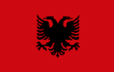
Albania (ALB)
Federata Shquiptare e Atletikes
Rruga Dervish Hima nr 31
Tirana, Albania
President: Gjerji RULI
General Secretary: Nikolin DIONISI
Tel: (355 42) 2 34 14
web: www.aaf.al
E-mail: fsha@live.com
E-mail: alb@mf.iaaf.org
Anthem
Download (mp3)
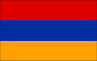
Armenia (ARM)
Athletic Federation of the Republic of Armenia
1 Zavaryan St., apt. 1
Yerevan 0018, Armenia
President: Robert EMMIYAN
General Secretary: Narine SHAHBAZYAN
Tel: (374 10) 54 12 62/541 263
web: www.armatletika.am
E-mail: info@armatletika.am
E-mail: emmiyan@armatletika.am
Anthem
Download (mp3)
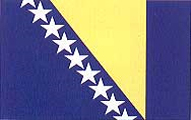
Bosnia and Herzegovina (BIH)
Athletic Federation of Bosnia and Herzegovina
Mis Irbina 10
71000 Sarajevo, Bosnia and Herzegovina
President: Suad KAKNJO
General Secretary: Milan PEDALO
Tel: (387 33) 44 58 89
Fax: (387 33) 44 58 90
Mobile: (387 61) 39 87 94 (G.S.)
web: www.asbih.org
E-mail: asbih@bih.net.ba
E-mail: bih@mf.iaaf.org
Anthem
Download (mp3)
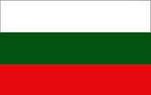
Bulgaria (BUL)
Bulgarian Athletic Federation
75 Vassil Levski Blvd.
1040 Sofia, Bulgaria
President: Dobromir KARAMARINOV
International Secretariy: Galia PUHALEVA
Tel: (359 2) 988 54 62 (President)
Tel: (359 2) 930 06 69; 930 06 31 (office)
Fax: (359 2) 988 07 14
Mobile: (359 88) 8566603 - Galia Puhaleva
web: www.bfla.org
E-mail: bulathletics@bfla.org
E-mail: bulathletic@mail.bg
E-mail: galia@bulathletics.info
E-mail: bul@mf.iaaf.org
Anthem
Download (mp3)
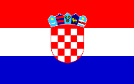
Croatia (CRO)
Hrvatski Atletski Savez
Krizaniceva 5
10000 Zagreb
Croatia
President: Luciano SUSANJ
Director: Sinisa ERGOTIC
Tel: (385 1) 46 22 635 (Director)
Tel: (385 1) 46 13 499 (General secretary)
Tel: (385 1) 46 10 117 (Office)
Fax: (385 1) 46 22 634
Mobile: (385 9) 8 41 24 45
web: www.has.hr
E-mail: has@has.hr
E-mail: sinisa.ergotic@has.hr
Anthem
Download (mp3)
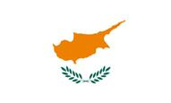
Cyprus (CYP)
The Amateur Athletic Association of Cyprus
21 Anfipoleos Str. 102-112.
2025 Strovolos, Nicosia
Cyprus
President: Antonios G. DRACOS
General Secretary: Pericles A. MARKARIS
Tel: (357) 22 449 825
Fax: (357) 22 449 826
E-mail: koeas@cytanet.com.cy
Anthem
Download (mp3)
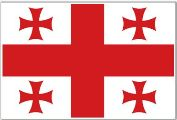
Georgia (GEO)
Athletic Federation of Georgia
21 Chavchavadze av 49b
0162 Tbilisi
Georgia
President: Ambrosi MATIASHVILI
General Secretary: Alexander JAPARIDZE
Tel: (995 32) 235 61 76
web: www.geoathletics.ge
E-mail: info@geoathletics.ge
E-mail: geoathletics@yahoo.com
Anthem
Download (mp3)
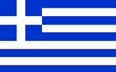
Greece (GRE)
Association Hellenique d'Athl?tisme Amateur (SEGAS)
137 Avenue Syngrou
Athens 17121, Greece
President: Konstantinos PANAGOPOULOS
General Secretary: Vassilios SEVASTIS
Tel : (302 10) 9 35 85 90
Tel : (302 10) 9 35 85 92 (Int. Dept)
Fax : (302 10) 9 34 29 80
web: www.segas.gr/
E-mail: president@segas.gr (President)
E-mail: internationalrelations@segas.gr (Int. Dept.)
Anthem
Download (mp3)
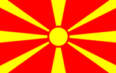
Former Yugoslav Republic of Macedonia (MKD)
Atletska Federacija na Makedonija
Sala KK "Rabotnicki", Gradski Park, Pos Fah 5
1000 Skopje, Macedonia
President: Krsto SERAFIMOVSKI
General Secretary: Dejan ANGELOVSKI
Tel/Fax: (389 2) 313 13 25
web: www.afm.org.mk
E-mail: mkd@mf.iaaf.org
E-mail: afm@mt.net.mk
Anthem
Download (mp3)
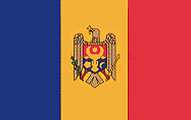
Moldova (MDA)
Federatia de Atletism din Republica Moldova
of.309, Ismail str. 58/1
Chisinau MD2001, Republic of Moldova
President: Anatolie BALAN
General Secretary: Constantin NEGURA
International Secretary: Serghei DONETS
Tel: (373 22) 278 300/1
Mobile: (373) 691 04 101 (President)
Mobile: (373) 792 63 560 (Gen. Secretary)
Mobile: (373) 692 01 943 (Inter. Secretary)
Fax: (373 22) 278 300
web: www.fam.com.md
E-mail: atletism_mda@mdl.net
E-mail: mda@mf.iaaf.org
E-mail: serdon58@yahoo.com
Anthem
Download (mp3)
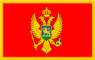
Montenegro (MNE)
Athletics Federation of Montenegro
ul. 19 Decembar br. 21
81000 Podgorica, Montenegro
President: Milorad VULETIC
General Secretary: Milan MADZGALJ
Phone/Fax: (382 20) 206 690
web: www.ascg.co.me
E-mail: ascg@t-com.me
Anthem
Download (mp3)
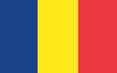
Romania (ROU)
Romanian Athletic Federation
2 Primo Nebiolo St.
011349 Bucharest, Romania
President: Ion SANDU
General Secretary: Florin FLOREA
Tel: (40 21) 319 24 45 (Office)
Tel: (40 21) 319 24 46 (Office)
Tel: (40 21) 319 24 47 (Pres.)
Fax: (40 21) 319 24 43 (Int. Rel.)
Fax: (373 22) 278 300
web: www.fra.com.ro
web: www.fratletism.ro
E-mail: sorin@fra.ro (President)
E-mail: nana@fra.ro (Gen. Sec.)
E-mail: traian@fra.ro (Int. Rel.)
Anthem
Download (mp3)
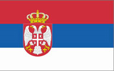
Serbia (SRB)
Athletics Federation of Serbia
Strahinjica Bana 73a
11000 Beograd, Serbia
President: Veselin JEVROSIMOVIC
General Secretary: Slobodan BRANKOVIC
Tel: (381 11) 2625 088
Tel: (381 11) 2626 876
Tel: (381 11) 2629 777
Fax: (381 11) 2627 371
Mobile: (381 64) 640 11 31 (Gen. Secr.)
web: www.serbia-athletics.org.rs
E-mail: asj@Eunet.rs
E-mail: boban45@beotel.net
Anthem
Download (mp3)
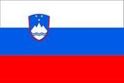
Slovenia (SLO)
Slovenian Athletic Federation
Letaliska Cesta 33-C
1122 Ljubljana, Slovenia
President: Gregor BENCINA
Secretary: Luka STEINER
Tel: (386 1) 520 69 14 (International Department)
Fax: (386 1) 520 69 16
E-mail: info@atletska-zveza.si
E-mail: luka.steiner@atletska-zveza.si
E-mail: davor.damjanic@atletska-zveza.si (International Department)
Website:www.atletska-zveza.si
Anthem
Download (mp3)
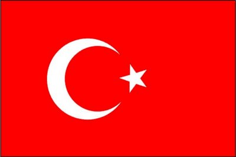
Turkey (TUR)
Turkiye Atletizm Federasyonu
19 Mayis Spor Kompleksi Naili
Moran Atletizm Tesisi Gar Ulus
Ankara, Turkey
President: Fatih ÇINTIMAR
General Secretary: Fahrettin YILDIZ
Tel: (90 312) 310 76 52
Tel: (90 312) 309 01 89
Fax: (90 312) 310 77 06
web: www.taf.org.tr
E-mail: atletizmtr@yahoo.com
E-mail: atletizm25@gmail.com
Anthem
Download (mp3)